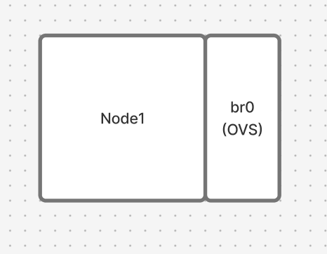

6-15. OVS와 VXLAN를 이용해 가상 네트워크 만들기
[6-15-1] 요구사항
- VM 세 개를 만들어서 각각 가상 NIC를 100,200,300으로 만들어서 OVS를 설치하고 host에서 ping으로
- 가상 네트워크에다가 ping이 가도록.
- 가상 NIC끼리 서로 통신이 되도록 만드는 것.
⇒ OVS로 VPN 서비스를 만든다(VXLAN으로).
VM 3개를 만들고 OVS와 VXLAN으로 VPN 같은 가상 네트워크를 만들어 보기
[6-15-2] 구축
sudo apt update
sudo apt install -y openvswitch-switch
sudo systemctl status openvswitch-switch각 노드마다 아래의 명령어를 실행해줍니다.

sudo ovs-vsctl add-br br0br0라는 이름의 가상 브릿지(가상 스위치)를 하나 만듭니다.
sudo ip addr add 10.0.0.100/24 dev br0생성한 가상 스위치(br0) 자체에 10.0.0.100이라는 관리용 IP 주소를 부여합니다.
sudo ip link set br0 up가상 스위치(br0)를 활성화(ON) 상태로 바꿉니다.
sudo ovs-vsctl add-port br0 vx-vm2 -- set interface vx-vm2 type=vxlan options:remote_ip=172.31.0.230 options:key=10
sudo ovs-vsctl add-port br0 vx-vm3 -- set interface vx-vm3 type=vxlan options:remote_ip=172.31.0.231 options:key=10물리적으로 떨어져 있는 호스트들을 가상의 터널로 잇는 과정입니다.
add-port br0 vx-vm2:br0스위치에vx-vm2라는 가상의 포트(구멍)를 하나 뚫습니다.type=vxlan: 이 포트에 꽂을 케이블의 종류를 VXLAN이라는 가상 터널 기술로 지정합니다.
options:remote_ip=172.31.0.230
- 이 터널 케이블의 반대쪽 끝이 연결된 물리적인 상대방 주소입니다.
- 실제 연결하고자 하는 노드의 IP를 의미합니다.
options:key=10
- VXLAN의 VNI(Virtual Network Identifier) 값입니다.
- 일종의 ’채널 번호’입니다. 상대방과 내가 똑같이
key=10으로 맞춰야만 같은 네트워크로 인식합니다. 만약 다른 팀이key=20을 쓰고 있다면, 같은 선을 공유하더라도 서로 데이터를 볼 수 없습니다
위와 같이 구성을 진행하시면 아래 그림처럼 연결됩니다.
- Full Mesh 구조입니다

[6-15-3] 트러블 슈팅
위의 구조에서 Node1 → Node2로 설정한 IP인 10.0.0.200/24로 핑을 날렸을 때 문제가 발생했습니다.
방화벽이나 네트워크 설정이 의도한 대로 이미 잘 되어 있는 것을 확인했고, 그럼에도 되지 않아 네트워크를 구성할 때부터 문제가 생겼음을 알 수 있었습니다.
다음 명령어를 통해 어떤 문제가 발생했는지를 살펴봅니다.
sudo tcpdump -i ens18 udp port 4789- VXLAN에서는 4789 포트에서 터널링을 위한 처리가 이뤄지고 UDP로 감싸진 채로 처리됩니다.
다음과 같이 ARP Flood가 일어나고 있음을 볼 수 있었습니다
ARP, Reply vxlan-2 is-at 5a:49:50:c8:7d:4f (oui Unknown), length 28
23:51:51.818049 IP 172.31.0.229.40188 > vxlan-2.4789: VXLAN, flags [I] (0x08), vni 10
ARP, Reply vxlan-2 is-at 5a:49:50:c8:7d:4f (oui Unknown), length 28
23:51:51.818049 IP 172.31.0.229.40188 > vxlan-2.4789: VXLAN, flags [I] (0x08), vni 10
ARP, Reply vxlan-2 is-at 5a:49:50:c8:7d:4f (oui Unknown), length 28
23:51:51.818049 IP 172.31.0.229.40188 > vxlan-2.4789: VXLAN, flags [I] (0x08), vni 10
ARP, Reply vxlan-2 is-at 5a:49:50:c8:7d:4f (oui Unknown), length 28
23:51:51.818068 IP 172.31.0.229.40188 > vxlan-2.4789: VXLAN, flags [I] (0x08), vni 10
ARP, Reply vxlan-2 is-at 5a:49:50:c8:7d:4f (oui Unknown), length 28ARP Flood가 왜 일어날까요?

- VM-A가 동일한 VNI(VXLAN Network Identifier)에 있는 VM-B와 통신하고 싶어 합니다. 하지만 VM-B의 MAC 주소를 모르기 때문에 ARP Request를 보냅니다.
- ARP Request는 브로드캐스트 패킷입니다. VXLAN에서 브로드캐스트, 멀티캐스트, 알 수 없는 유니캐스트(BUM)는 모든 목적지에 전달되어야 합니다.
- Full-mesh 구조에서 특정 VTEP은 자신이 알고 있는 모든 상대방 VTEP(Peer) 목록을 가지고 있습니다.
- 브로드캐스트 패킷이 들어오면, VTEP은 이 패킷을 복제하여 리스트에 있는 모든 VTEP에게 유니캐스트로 쏩니다.
- 참여하는 VTEP 노드가 많아질수록 단 하나의 ARP 요청이 수많은 복제 패킷을 만들어 네트워크 전체에 뿌려지게 됩니다. → Flood가 발생합니다
sudo ovs-vsctl set bridge br0 stp_enable=true이를 해결하기 위해서 stp 설정을 각 노드에서 진행해줍니다.
stp_enable=true는 Spanning Tree Protocol을 활성화하겠다는 뜻입니다.
Spanning Tree Protocol는 뭘까요?

- STP의 역할은 루프 방지입니다. 네트워크에 경로가 여러 개 있을 때, 패킷이 한 방향으로 가지 않고 뱅글뱅글 도는 ‘루프’ 현상이 발생하면 네트워크는 즉시 마비됩니다.
- STP는 이 루프를 감지해서 특정 경로를 논리적으로 차단(Blocking)했다가, 주 경로가 끊기면 다시 여는 역할을 합니다.
- STP가 동작하면 위와 같이 물리적으로 루프 구조인 네트워크에서 특정 포트를 차단 상태로 바꾸어 논리적으로 루프가 발생하지 않게 됩니다.
설정 후 들어오는 트래픽에 대해서도 확인해 보면 VNI 10으로 설정한 경우 정상적으로 오고 갑니다.
sudo tcpdump -i ens18 udp port 4789


잘 보내집니다.
[6-15-4] 생각해볼 부분들
stp 말고는 ARP Flood를 막을 수 있는 방법이 없는가?
- stp는 BPDUs 패킷을 주고받아 루프를 감지하고 특정 포트를 물리적으로 차단하는 방식이므로 대역폭을 낭비할 수 있고, 장애 시 재계산 시간 필요합니다.
→ OVS Group Table (all type)로 처리도 가능
- 트래픽을 복제할 대상을 미리 정해두고, 논리적으로 지정된 곳으로만 전송합니다
- Group Table은 애초에 ‘들어온 포트로 다시 나가지 않게’ 하거나 ‘허가된 터널로만 나가게’ 설계하므로 논리적인 루프 자체가 발생하지 않도록 제어합니다.
full mesh를 기반으로해서 구현하는 것이 올바른가?
작은 규모라면 상관 없지만, 규모가 커지면 관리가 어려운 것이 사실입니다
그래서 Full-mesh의 flooding 오버헤드를 피하기 위해 L2Pop과 EVPN-VXLAN 같은 컨트롤 플레인 기반 방식도 쓴다고 합니다.
L2 Population (L2Pop)


- Neutron ML2 플러그인 + OVS에서 쓰는 메커니즘 드라이버로, 중앙 Neutron 서버가 VM의 MAC/IP 위치를 모든 노드에 RPC로 미리 푸시합니다.
- BUM(Broadcast/Unknown/Multicast) 트래픽을 unicast source replication으로 바꿔 전체 flooding 대신 “대상 노드 하나로만” 패킷 전송.
- ARP responder도 추가해 로컬에서 ARP reply 생성, 브로드캐스트를 아예 막음. OVS flow 테이블에 prepopulate.
EVPN-VXLAN (BGP EVPN)

- BGP EVPN 컨트롤 플레인으로 VTEP(Leaf 스위치 등) 간 MAC/IP 정보를 자동 동기화합니다. Type-2 route로 엔드포인트 학습합니다.
- ARP Suppression: VTEP이 이미 BGP에서 알던 MAC/IP로 ARP request를 로컬 proxy reply. Flooding 최소화.
- Scale-out 강점: 노드 추가 시 BGP가 자동 피어링·라우팅 업데이트. 멀티테넌트 VNI별 관리 쉬움.
라고 설명하는데, 개념이 다소 어렵게 느껴질 수 있습니다. 아래 내용은 제미나이에게 질의하여 보다 이해하기 쉽게 정리한 예시입니다.
VM-B가 VTEP-2에 생성되자마자, VTEP-2는 중앙 전산소인 RR에게 이 소식을 알립니다.
[ VM-B (10.0.1.2) ] ----> [ VTEP-2 ] ----------------> [ BGP RR (전산소) ]
(이사 완료) (우체국2) "신규 입주 신고!" (정보 수집)
(BGP Update)- VTEP-2의 메시지: “전산소님, 제 아래에 IP
10.0.1.2, MACBB:BB를 가진 VM-B가 들어왔습니다!”
중앙 전산소(RR)는 받은 정보를 데이터베이스에 저장하고, 자신에게 연결된 모든 Client(우체국들)에게 이 정보를 반사(Reflection)합니다.
[ BGP RR (전산소) ]
/ | \
(반사) / | \ (반사)
v v v
[ VTEP-1 ] [ VTEP-2 ] [ VTEP-3 ]`- RR의 방송: “모두 주목! 이제부터
10.0.1.2로 가는 편지는VTEP-2(우체국2)로 보내면 된다. 다들 자기 수첩에 적어놔!” - 결과: 모든 VTEP은 통신이 시작되기도 전에 VM-B의 위치를 이미 알게 됩니다. (Control Plane Learning)
이제 VM-A가 VM-B에게 처음으로 데이터를 보냅니다. 예전 같으면 “누가 VM-B야?”라고 소리를 질렀겠지만, 이제는 다릅니다.
1. [ VM-A ] ----> "10.0.1.2(VM-B) 누구야?" (ARP Request) ----> [ VTEP-1 ]
2. [ VTEP-1 ] (수첩 확인):
"잠깐, 소리 지를 필요 없어! 전산소에서 아까 말해줬지.
10.0.1.2는 우체국2(VTEP-2)에 있고, MAC은 BB:BB야." [ARP Suppression]
3. [ VTEP-1 ] ---- (VXLAN 터널) ----> [ VTEP-2 ] ----> [ VM-B ]- VTEP-1은 ARP 요청을 네트워크 전체에 뿌리지(Flood) 않고, 자기가 알고 있는 정보로 VM-A에게 바로 답장해 줍니다.
- 데이터 패킷은 정확히 VTEP-2로만 1:1 유니캐스트로 전달됩니다.
즉 두 가지 방식 모두 하나의 큰 소프트웨어를 두고, 특정 VTEP이 생성됐을 때 이를 감지하고 이 VTEP에 대한 네트워크 정보를 나눠 주는 주체를 두어 처리한다는 점이 동일한 것 같습니다.
- “중앙에서 정보를 관리하고 배포하는 주체”를 둬서, 전통적인 이더넷의 “소문내서 찾기(Flood & Learn)” 방식을 “미리 알고 알려주기(Push & Direct)” 방식으로 변경